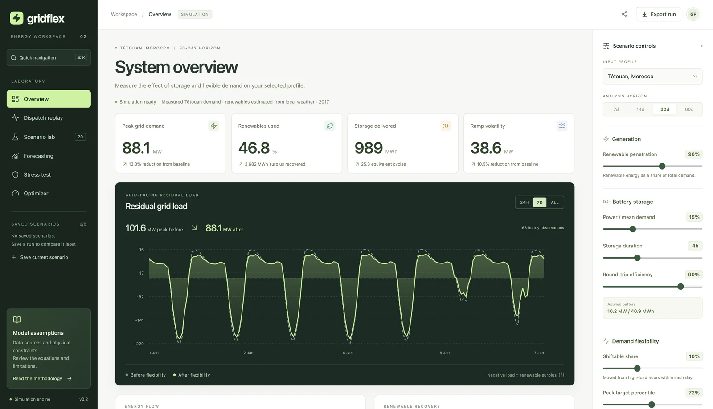

01 / FULL-STACK & SCIENTIFIC COMPUTING
What if the grid
could bend?
GRIDFLEX
An energy simulation workspace for exploring what batteries and flexible demand can change.
React · TypeScript · FastAPI · NumPy
The actual application. A Tétouan energy profile.I built the workspace, API and numerical engine. The interface makes scenarios easy to compare; the backend bounds expensive computation and keeps the physics in one reusable engine.
31.9×
local pipeline speedup71.731 → 2.246 ms · 60-day profile
Recorded shift + battery benchmark, not whole-app latency. Identical numerical outputs in that case. Release 0.2.0: 91 Python tests and five browser journeys. Research simulation; free hosting may need time to wake.